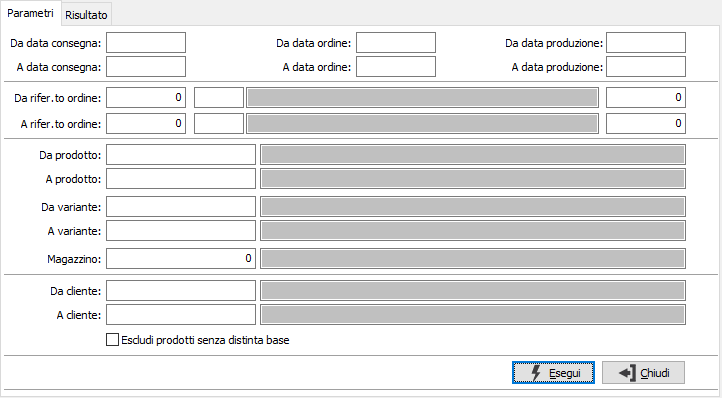
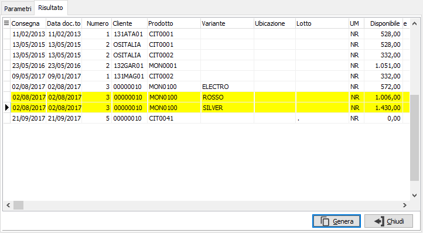
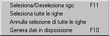

Evasione ordini da produzione
In questa finestra è possibile specificare i criteri di selezione degli ordini da visualizzare nella pagina dei risultati per poterli importare nella disposizione.

DA DATA CONSEGNA: data di consegna da cui deve iniziare l’analisi degli ordini. Confermando a vuoto, l’analisi inizia con il primo ordine valido.
A DATA CONSEGNA: eventuale data di consegna con cui si desidera terminare l’analisi degli ordini. Confermando a vuoto, l’analisi si conclude con l'ultimo ordine valido.
DA DATA PRODUZIONE: data di produzione da cui deve iniziare l’analisi degli ordini. Confermando a vuoto, l’analisi inizia con il primo ordine valido.
A DATA PRODUZIONE: eventuale data di produzione con cui si desidera terminare l’analisi degli ordini. Confermando a vuoto, l’analisi si conclude con l'ultimo ordine valido.
DA RIFERIMENTO ORDINE: tre campi per contenere rispettivamente anno, causale e numero dell'ordine da cui si vuole iniziare la selezione. Confermando a vuoto, la selezione inizia dal primo ordine compatibile con gli altri parametri.
A RIFERIMENTO ORDINE: tre campi per contenere rispettivamente anno, causale e numero dell'ordine con cui si vuole terminare la selezione. Confermando a vuoto, la selezione termina con l'ultimo ordine compatibile con gli altri parametri.
DA PRODOTTO: eventuale codice dell'articolo, presente in anagrafica Prodotti, da cui si desidera iniziare la selezione di analisi. Confermando a vuoto, la selezione inizia con il primo prodotto valido. Sul campo sono attive le funzioni di ricerca (F9).
A PRODOTTO: eventuale codice dell'articolo, presente in anagrafica Prodotti, a cui si desidera terminare la selezione di analisi. Confermando a vuoto, la selezione termina con l’ultimo valido. Sul campo sono attive le funzioni di ricerca (F9).
DA VARIANTE: campo presente solo se attiva la gestione varianti. Eventuale codice della variante, da cui si desidera iniziare la selezione di analisi. Confermando a vuoto, la selezione inizia con la prima variante valida. Sul campo sono attive le funzioni di ricerca (F9).
A VARIANTE: campo presente solo se attiva la gestione varianti. Eventuale codice della variante, a cui si desidera terminare la selezione di analisi. Confermando a vuoto, la selezione termina con l’ultima variante valida. Sul campo sono attive le funzioni di ricerca (F9).
MAGAZZINO: eventuale codice del magazzino a cui si vuole limitare la selezione degli ordini. Confermando a vuoto, la selezione considera tutti i magazzini validi. Sul campo sono attive le funzioni di ricerca (F9).
DA CLIENTE: eventuale codice del cliente, presente in anagrafica clienti, da cui si vuole iniziare la selezione di analisi. Confermando a vuoto, la selezione inizia dal primo cliente valido. Sul campo sono attive le funzioni di ricerca (F9).
A CLIENTE: eventuale codice del cliente, presente in anagrafica clienti, con cui si vuole terminare la selezione di analisi. Confermando a vuoto, la selezione termina con l’ultimo cliente valido. Sul campo sono attive le funzioni di ricerca (F9).
ESCLUDI PRODOTTI SENZA DISTINTA BASE: indica se deve essere effettuato un controllo per escludere dall'elaborazione i prodotti che non dispongono di distinta base (casella con segno di spunta).
Dopo aver inserito i criteri necessari e premuto il pulsante Esegui, gli ordini selezionati vengono visualizzati nella pagina dei risultati.

In questa pagina è possibile scegliere quali righe, e con quali quantità, inserire nella disposizione. Se gestite varianti e/o lotti e presente il dettaglio quantità il rigo dell'ordine viene frazionato in relazione alla composizione del dettaglio.
La selezione e l'annullamento della stessa può avvenire in diversi modi. Per selezionare oppure annullare la selezione di un rigo è sufficiente fare doppio clic con il mouse sul rigo interessato (se selezionato verrà annullata la

selezione altrimenti il contrario). È anche possibile utilizzare il menù indicato a lato (attivato tramite la pressione del tasto destro del mouse). È consentito selezionare o deselezionare un solo rigo oppure tutte le righe. È anche consentito inserire manualmente la quantità nella colonna "Selezionata".Se un rigo viene evaso completamente lo sfondo appare di colore giallo, se viene evaso parzialmente lo sfondo assume un colore giallo molto più chiaro, altrimenti lo sfondo rimane bianco.
La pressione sul pulsante Genera o del tasto F10 determina l'inserimento dei dati selezionati nella disposizione.